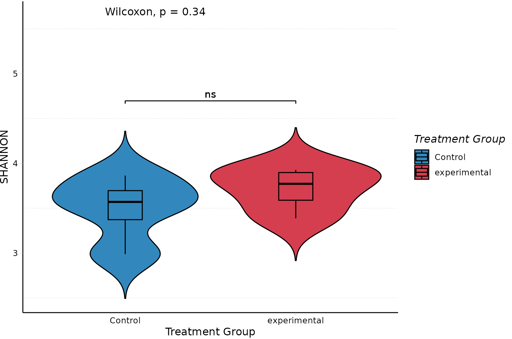
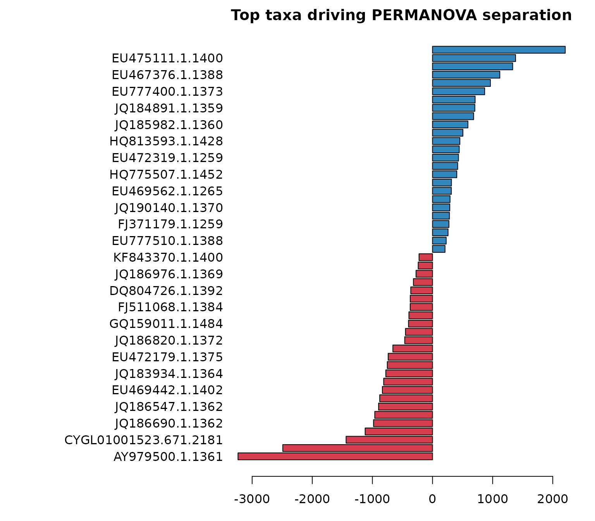
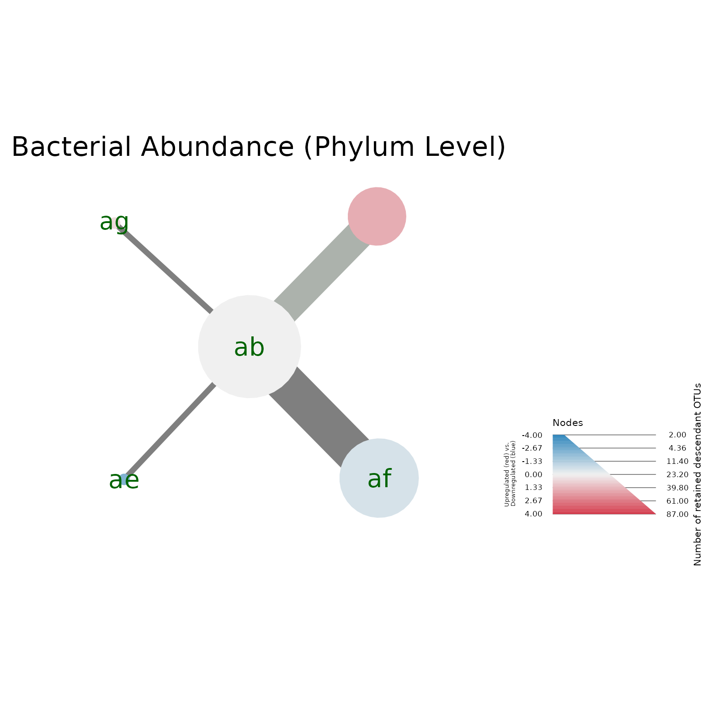
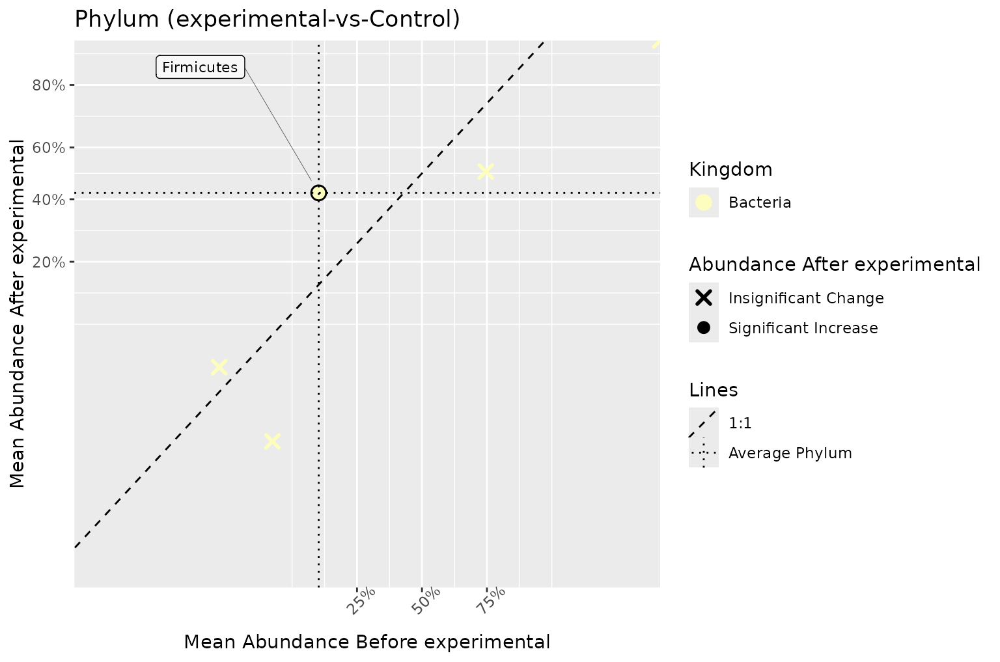
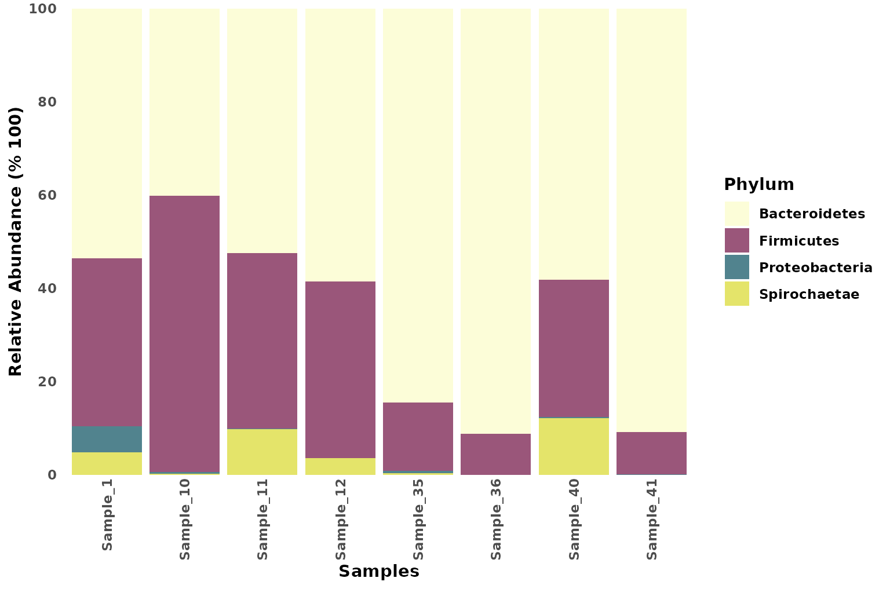
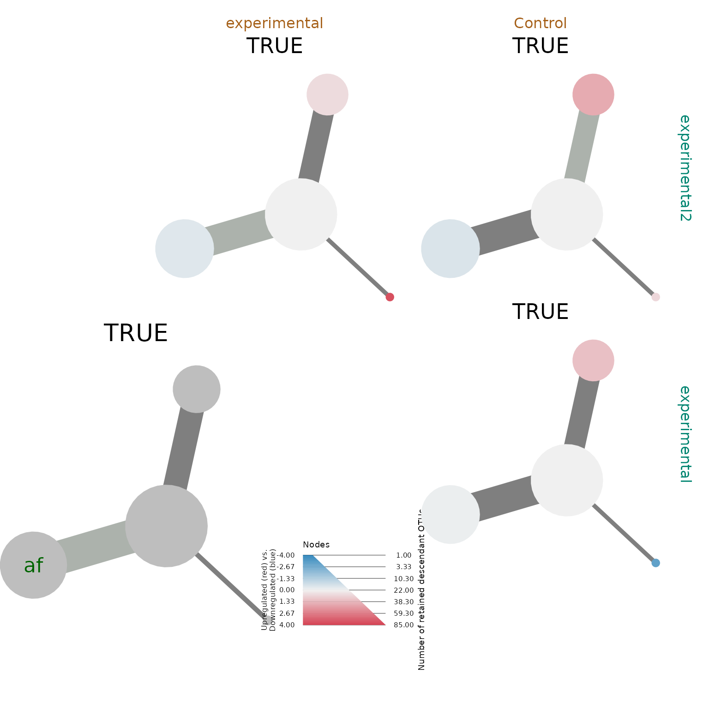

vignettes/analysis.Rmd
analysis.RmdBeginning an microbiome analysis starts with importing data and wrangling it into a proper format.
The complete import workflow is shown below. To keep the installed vignette quick to build, the executed results use a deterministic subset containing four samples from each treatment group and the 100 most abundant OTUs. These results illustrate the workflow and should not be interpreted as estimates from the full study.
# Get the data files from package
input_files <- pkg.data$input_files
biom_file <- input_files$biom_files$silva # Path to silva biom file
tree_file <- input_files$tree_files$silva # Path to silva tree file
metadata_file <- input_files$metadata$two_groups # Path to Nephele metadata
parse_func <- parse_taxonomy_silva_128 # A custom phyloseq parsing function for silva annotations
# Get the phyloseq object
phy_obj <- create_phyloseq(biom_file = biom_file,
tree_file = tree_file,
metadata_file = metadata_file,
parse_func = parse_func)
# Get the taxmap object in the raw format
raw_metacoder <- as_MicrobiomeR_format(obj = phy_obj, format = "raw_format")After importing data and formatting it, data should be filtered to reduce noise and if desired, to subset data.
# Remove Archaea from the taxmap object
metacoder_obj <- metacoder::filter_taxa(
obj = raw_metacoder,
taxon_names == "Archaea",
subtaxa = TRUE,
invert = TRUE
)
# Ambiguous Annotation Filter - Remove taxonomies with ambiguous names
metacoder_obj <- metacoder::filter_ambiguous_taxa(metacoder_obj,
subtaxa = TRUE)
# Low Sample Filter - Remove the low samples
# The sample filter should generally be implemented first
metacoder_obj <- sample_id_filter(obj = metacoder_obj,
.f_filter = ~sum(.),
.f_condition = ~.>= 20,
validated = TRUE)
# Master Threshold Filter - Add the otu_proportions table and then filter OTUs based on min %
metacoder_obj <- otu_proportion_filter(obj = metacoder_obj,
otu_percentage = 0.00001)
# Taxon Prevalence Filter - Add taxa_abundance and taxa_proportions and then filter OTUs that do not
# appear more than a certain amount of times in a certain percentage of samples at the specified
# agglomerated rank. This is considered a supervised method, because it relies on intermediate
# taxonomies to filter the data.
# The default minimum abundance is 5 and the sample percentage is 0.5 (5%).
# Phylum
metacoder_obj <- taxa_prevalence_filter(obj = metacoder_obj,
rank = "Phylum")
# Class
metacoder_obj <- taxa_prevalence_filter(obj = metacoder_obj,
rank = "Class",
validated = TRUE)
# Order
metacoder_obj <- taxa_prevalence_filter(obj = metacoder_obj,
rank = "Order",
validated = TRUE)
# OTU Prevalence Filter - Filter OTUs that do not appear more than a certian amount of times in a
# certain percentage of samples. This is considered an unsupervised method, because it relies only
# on the leaf OTU ids to filter the data.
metacoder_obj <- otu_prevalence_filter(obj = metacoder_obj,
validated = TRUE)
# Coefficient of Variation Filter - Filter OTUs based on the coefficient of variation
metacoder_obj <- cov_filter(obj = metacoder_obj,
coefficient_of_variation = 3,
validated = TRUE)Analysis is primarily done with metacoder, MicrobiomeR, and ggplot2.
Before beginning the analysis it’s wise to create an output directory.
Use end_path=FALSE with MicrobiomeR’s
output_dir() function to avoid the creation of a date
formatted directory.
# Create a directory for whichever plot you want to save
heat_tree_path <- output_dir(end_path = FALSE, start_path = "output", plot_type = "heat_tree")
corr_plot_path <- output_dir(end_path = FALSE, start_path = "output", plot_type = "correlation")
sb_plot_path <- output_dir(end_path = FALSE, start_path = "output", plot_type = "stacked_barplot")
ord_plot_path <- output_dir(end_path = FALSE, start_path = "output", plot_type = "ordination")Statistical analysis is primarily done with the help of metacoder
style functions such as the calc_*() group of functions,
and compare_groups(). The taxa function
taxonomy_table() is also useful for matching stats with the
proper taxonomic annotation. MicrobiomeR creates the proper tables with
as_MicrobiomeR_format(format = "analyzed_format", ...).
# Get the statistical observation data.
metacoder_obj <- as_MicrobiomeR_format(obj = metacoder_obj, format = "analyzed_format")In addition to standard statistical analysis provided by metacoder,
MicrobiomeR simplifies alpha diversity, ordination, and PERMANOVA
analysis.
permanova() and heat_tree_plots() use a
reproducible seed by default while restoring the caller’s RNG state on
exit. Supply seed explicitly when you want the seed
recorded in your workflow or report.
# Generate alpha diversity measures
measures <- alpha_diversity_measures(obj = metacoder_obj)
measures$Shannon
#> [1] 3.926634 3.387509 3.656438 3.888356 3.864168 3.500466 3.640238 2.988098To complement the summary table, alpha_diversity_plot()
can visualize how the selected index differs across treatment
groups.
# Plot alpha diversity for the Shannon index
alpha_diversity_plot(obj = metacoder_obj,
measure = "Shannon",
group = "TreatmentGroup",
title = "Treatment Group")
# Get only ordination data for the first Axis based on principal coordinates analysis using weighted unifrac.
ordination <- ordination_plot(obj = metacoder_obj, method = "PCoA", distance = "wunifrac", only_data = TRUE)
ordination$Axis.1
#> [1] -0.17949509 -0.18296679 -0.22467518 -0.02761308 0.16832522 -0.04677116
#> [7] 0.24224372 0.25095237
# Generate permanova statistics for data
permanova <- permanova(obj = metacoder_obj, group = "TreatmentGroup", seed = 1)
permanova$permanova$aov.tab
#> Permutation test for adonis under reduced model
#> Permutation: free
#> Number of permutations: 99
#>
#> vegan::adonis2(formula = dist_formula, data = meta, permutations = 99, method = distance_method)
#> Df SumOfSqs R2 F Pr(>F)
#> Model 1 0.39963 0.29008 2.4516 0.05 *
#> Residual 6 0.97804 0.70992
#> Total 7 1.37767 1.00000
#> ---
#> Signif. codes: 0 '***' 0.001 '**' 0.01 '*' 0.05 '.' 0.1 ' ' 1top_coefficients_barplot() provides a quick visual
summary of the taxa that contribute most to the separation captured by
the PERMANOVA model.
# Plot the taxa with the largest PERMANOVA coefficients
top_coefficients_barplot(permanova$top_coefficients,
title = "Top taxa driving PERMANOVA separation")
#> [,1]
#> [1,] 0.7
#> [2,] 1.9
#> [3,] 3.1
#> [4,] 4.3
#> [5,] 5.5
#> [6,] 6.7
#> [7,] 7.9
#> [8,] 9.1
#> [9,] 10.3
#> [10,] 11.5
#> [11,] 12.7
#> [12,] 13.9
#> [13,] 15.1
#> [14,] 16.3
#> [15,] 17.5
#> [16,] 18.7
#> [17,] 19.9
#> [18,] 21.1
#> [19,] 22.3
#> [20,] 23.5
#> [21,] 24.7
#> [22,] 25.9
#> [23,] 27.1
#> [24,] 28.3
#> [25,] 29.5
#> [26,] 30.7
#> [27,] 31.9
#> [28,] 33.1
#> [29,] 34.3
#> [30,] 35.5
#> [31,] 36.7
#> [32,] 37.9
#> [33,] 39.1
#> [34,] 40.3
#> [35,] 41.5
#> [36,] 42.7
#> [37,] 43.9
#> [38,] 45.1
#> [39,] 46.3
#> [40,] 47.5
#> [41,] 48.7
#> [42,] 49.9
#> [43,] 51.1
#> [44,] 52.3
#> [45,] 53.5
#> [46,] 54.7
#> [47,] 55.9
#> [48,] 57.1
#> [49,] 58.3
#> [50,] 59.5Visualization of taxmap objects can be done in several ways, and
MicrobiomeR offers the most complete visualizations of any
other existing microbiome package. The metacoder package primarily
produces heat_tree()s for visualization, which can be used
for any taxmap object. MicrobiomeR does this as well, but takes care of
creating default values that we enjoyed in our heat tree plots.
MicrobiomeR also uses ggplot2 to create
correlation_plot()s.
In these heat trees, node size represents the number of retained OTUs
assigned to each taxon or any of its descendants in the source
otu_abundance table. These counts are pooled across samples
after filtering and describe retained taxonomic feature richness, not
read abundance. Node color separately summarizes the between-group
relative-abundance comparison.
# Generate heat_trees
heat_tree_plots <- heat_tree_plots(metacoder_obj,
rank_list = c("Phylum", "Class", "Order"),
seed = 1,
node_label = ifelse(wilcox_p_value > 0.05, taxon_ids, NA),
node_label_size = 2,
node_label_color = c("darkgreen"))
names(heat_tree_plots)
#> [1] "metacoder_object" "heat_trees" "taxmaps"
# Generate correlation_plots
corr_plots <- correlation_plots(metacoder_obj, primary_ranks = c("Phylum", "Class", "Order"))
names(corr_plots)
#> [1] "Phylum" "Class" "Order"
# Generate stacked_barplots
sb_plots <- stacked_barplots(metacoder_obj, tax_levels = c("Phylum", "Class", "Order"))
names(sb_plots)
#> [1] "Phylum" "Class" "Order"
# Save plots with a custom output path
save_heat_tree_plots(htrees = heat_tree_plots, custom_path = heat_tree_path)
save_correlation_plots(corr = corr_plots, custom_path = corr_plot_path)
save_stacked_barplots(sb_plots = sb_plots, custom_path = sb_plot_path)
save_ordination_plots(ord_plots = ordination, custom_path = ord_plot_path)
# View the Phylum level heat tree
heat_trees <- heat_tree_plots$heat_trees
heat_trees$Phylum
# View the Phylum level correlation plot
corr_plots$Phylum
#> $Kingdom
#> $Kingdom$`experimental-vs-Control`
# View the Phylum level stacked barplot
sb_plots$Phylum
The full three-group import is shown here for reproducibility.
input_files <- pkg.data$input_files
metadata_file <- input_files$metadata$three_groups
biom_file <- input_files$biom_files$silva # Path to silva biom file
tree_file <- input_files$tree_files$silva # Path to silva tree file
parse_func <- parse_taxonomy_silva_128 # A custom phyloseq parsing function for silva annotations
# Get the phyloseq object
phy_obj <- create_phyloseq(biom_file = biom_file,
tree_file = tree_file,
metadata_file = metadata_file,
parse_func = parse_func)
# Heat Trees
# Get the taxmap object in the raw format
raw_metacoder <- as_MicrobiomeR_format(obj = phy_obj, format = "raw_format")
# Remove Archaea from the taxmap object
metacoder_obj <- metacoder::filter_taxa(
obj = raw_metacoder,
taxon_names == "Archaea",
subtaxa = TRUE,
invert = TRUE
)
# Ambiguous Annotation Filter - Remove taxonomies with ambiguous names
metacoder_obj <- metacoder::filter_ambiguous_taxa(metacoder_obj,
subtaxa = TRUE)
# Low Sample Filter - Remove the low samples
# The sample filter should generally be implemented first
metacoder_obj <- sample_id_filter(obj = metacoder_obj,
.f_filter = ~sum(.),
.f_condition = ~.>= 20,
validated = TRUE)
# Master Threshold Filter - Add the otu_proportions table and then filter OTUs based on min %
metacoder_obj <- otu_proportion_filter(obj = metacoder_obj,
otu_percentage = 0.00001)
# Taxon Prevalence Filter - Add taxa_abundance and taxa_proportions and then filter OTUs that do not
# appear more than a certian amount of times in a certain percentage of samples at the specified
# agglomerated rank. This is considered a supervised method, because it relies on intermediate
# taxonomies to filter the data.
# The default minimum abundance is 5 and the sample percentage is 0.5 (5%).
# Phylum
metacoder_obj <- taxa_prevalence_filter(obj = metacoder_obj,
rank = "Phylum")
# Class
metacoder_obj <- taxa_prevalence_filter(obj = metacoder_obj,
rank = "Class",
validated = TRUE)
# Order
metacoder_obj <- taxa_prevalence_filter(obj = metacoder_obj,
rank = "Order",
validated = TRUE)
# OTU Prevalence Filter - Filter OTUs that do not appear more than a certian amount of times in a
# certain percentage of samples. This is considered an unsupervised method, because it relies only
# on the leaf OTU ids to filter the data.
metacoder_obj <- otu_prevalence_filter(obj = metacoder_obj,
validated = TRUE)
# Coefficient of Variation Filter - Filter OTUs based on the coefficient of variation
metacoder_obj <- cov_filter(obj = metacoder_obj,
coefficient_of_variation = 3,
validated = TRUE)
metacoder_obj <- as_MicrobiomeR_format(obj = metacoder_obj, format = "analyzed_format")
# Generate heat_trees
heat_tree_plots <- heat_tree_plots(metacoder_obj,
rank_list = c("Phylum", "Class", "Order"),
seed = 1,
node_label = ifelse(wilcox_p_value < 0.05, taxon_ids, NA),
node_label_size = 2,
node_label_color = c("darkgreen"))
heat_trees <- heat_tree_plots$heat_trees
heat_trees$Phylum
# Generate Correlation plots
corr_plots <- correlation_plots(metacoder_obj, primary_ranks = c("Phylum", "Class", "Order"))
corr_plots$Class$Phylum$`Exp_Var2-vs-Exp_Var1`
#> NULL
corr_plots$Class$Phylum$`Exp_Var2-vs-Control`
#> NULL
corr_plots$Class$Phylum$`Exp_Var1-vs-Control`
#> NULL